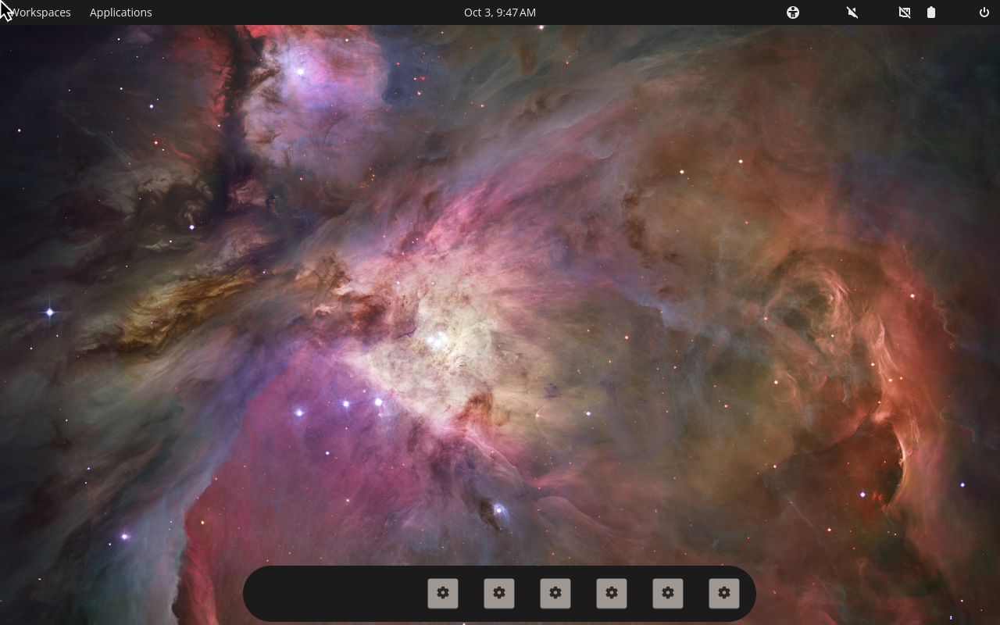
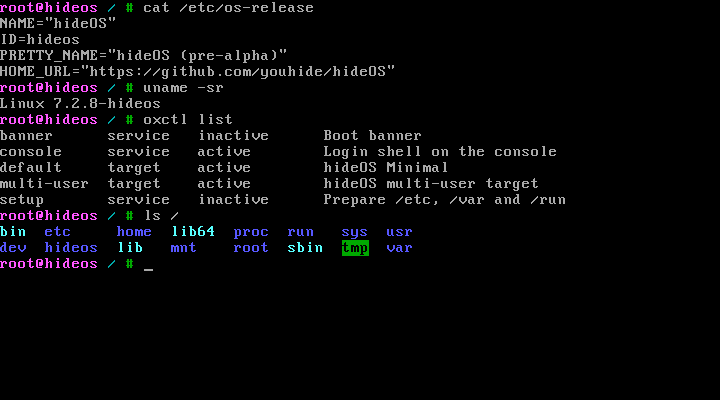

$grep ^NAME= /etc/os-release
hideOS
A Linux workstation that can't change under you.
Built from source and sealed: the whole system is one signed image, checked on every read. Updates replace it whole, and if one doesn't boot, the machine goes back by itself. Your files, settings and apps live outside it.
# pre-alpha: today it builds itself from source and boots to a shell under oxinit, in QEMU. the COSMIC desktop arrives in milestone H5.
# the ring is the fs-verity digest of the image in the screenshot below. its kernel boots that image and no other; change one byte of it, and the boot stops.
$cat promises.txt
# the model is macOS. what it buys is a machine that is always in a state somebody tested.
Everything in /usr is content-addressed and verified on every read. Nothing writes to it, root included, so a machine can't drift from the image it booted.
An update is a new image next to the old one, never a change to the running one. It gets three tries to boot; after that, the machine goes back to the previous image by itself.
/home, /etc and /var sit on their own encrypted volumes and no update touches them. Apps come from Flatpak; development tools run in containers.
$cat docs/boot-chain.log
# from power-on to desktop, nothing runs that the step before it didn't verify.
- UEFI Secure BootChecks the boot manager's signature against hideOS's key.
- hidebootH7, systemd-boot until thenPicks the newest image with tries left, and falls back when an update keeps failing.
- signed kernel imageKernel, initrd and command line in one signed file. The command line carries the system image's digest, so the signature covers it.
- hidestageH2Unlocks the disk with the TPM, then mounts the system only if its digest matches the one the kernel was signed with.
- oxinitPID 1, in Rust. Starts and supervises everything else, and never panics.
- COSMICH5The desktop, also Rust, with hideOS's updates and recovery as pages in its Settings.
$cargo xtask screenshot --edition workstation --login
# hideOS Workstation: COSMIC epoch 1.9, Mesa and LLVM built from source, booted sealed from its own disk, logged in at cosmic-greeter. drawn by llvmpipe on QEMU's virtio-gpu.

# the dock's gears are missing icons: the base icon theme is next.
$cargo xtask screenshot
# not a mock-up. the kernel, glibc, oxinit, zsh and uutils below were built from source by hideOS's own build system, booted in QEMU, and photographed by this command.

# the login shell a few seconds after boot: cat /etc/os-release, uname -sr, oxctl list, ls /
$git clone https://github.com/youhide/hideOS && cd hideOS $cargo xtask builder build $cargo xtask image $cargo xtask boot
$hideforge build minimal
# every package builds in fresh Linux namespaces with no network, seeing only its declared inputs. sources are pinned by SHA-256 and checked against upstream signatures where they exist. the bootstrap follows Linux From Scratch.
| stage | builds | 2018 laptop |
|---|---|---|
| 0 | A cross toolchain (binutils, GCC, glibc), then the temporary tools stage 1 runs on. | 42 min |
| 1 | More temporary tools inside that tree: Perl, Python, bison, Texinfo. | 13 min |
| 2 | The system itself, toolchain first. Only stage 2 goes into an image, and every library it links must come from stage 2. | ~1 h |
$cat ROADMAP.md
# each milestone ends with something that boots and is checked, not with code that compiles.
- H0Repository, architecture, build environmentdone
- H1hideforge builds hideOS Minimal, which boots to a shelldone on x86_64
- H2The seal: composefs, fs-verity, signed kernel imagesboots sealed; signing next
- H3Whole-image updates and automatic rollbackplanned
- H4Real hardware: TPM disk encryption, Wi-Fi, suspendplanned
- H5hideOS Workstation: COSMIC, Flatpak, containers for developmentlogs in to the desktop
- H6NVIDIA as a signed extension; ARM64planned
- H7Installer, recovery, hidebootplanned
- H8Rust replacements for the device manager and login daemonplanned